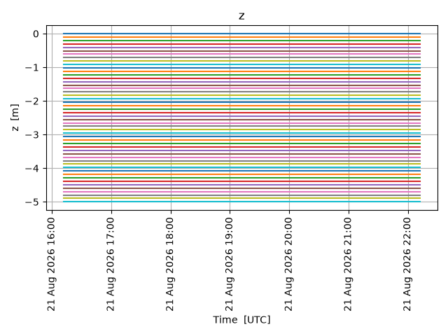
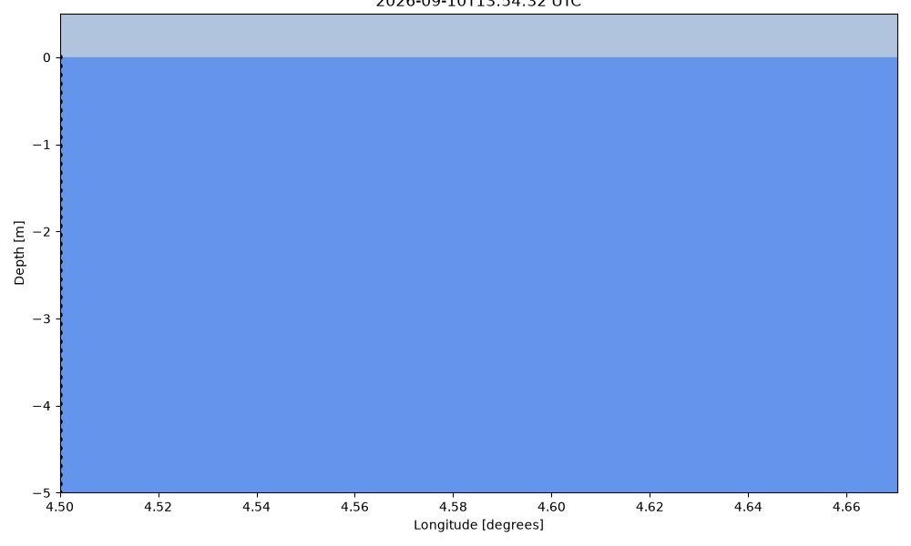

Note
Go to the end to download the full example code.
2D simulation profile
from datetime import datetime, timedelta
import numpy as np
from opendrift.models.oceandrift import OceanDrift
o = OceanDrift(loglevel=20) # Set loglevel to 0 for debug information
16:12:02 INFO opendrift:569: OpenDriftSimulation initialised (version 1.14.10 / v1.14.10-36-gbd54622)
Define some constant current, wind and Stokes drift
o.set_config('environment:fallback:x_wind', 7)
o.set_config('environment:fallback:x_sea_water_velocity', .1)
o.set_config('environment:fallback:sea_surface_wave_stokes_drift_x_velocity', .2)
o.set_config('environment:fallback:sea_surface_wave_significant_height', 2)
Seed elements between surface and 5m depth
time = datetime.utcnow()
z = -np.linspace(0, 5, 50)
o.seed_elements(lon=4.5, lat=60.0, z=z, radius=0, number=len(z), time=time)
/root/project/examples/example_2d.py:22: DeprecationWarning: datetime.datetime.utcnow() is deprecated and scheduled for removal in a future version. Use timezone-aware objects to represent datetimes in UTC: datetime.datetime.now(datetime.UTC).
time = datetime.utcnow()
16:12:02 INFO opendrift.models.basemodel.environment:203: Adding a global landmask from GSHHG
16:12:09 INFO opendrift.models.basemodel.environment:227: Fallback values will be used for the following variables which have no readers:
16:12:09 INFO opendrift.models.basemodel.environment:230: x_sea_water_velocity: 0.100000
16:12:09 INFO opendrift.models.basemodel.environment:230: y_sea_water_velocity: 0.000000
16:12:09 INFO opendrift.models.basemodel.environment:230: sea_surface_height: 0.000000
16:12:09 INFO opendrift.models.basemodel.environment:230: x_wind: 7.000000
16:12:09 INFO opendrift.models.basemodel.environment:230: y_wind: 0.000000
16:12:09 INFO opendrift.models.basemodel.environment:230: upward_sea_water_velocity: 0.000000
16:12:09 INFO opendrift.models.basemodel.environment:230: ocean_vertical_diffusivity: 0.000000
16:12:09 INFO opendrift.models.basemodel.environment:230: horizontal_diffusivity: 0.000000
16:12:09 INFO opendrift.models.basemodel.environment:230: sea_surface_wave_significant_height: 2.000000
16:12:09 INFO opendrift.models.basemodel.environment:230: sea_surface_wave_stokes_drift_x_velocity: 0.200000
16:12:09 INFO opendrift.models.basemodel.environment:230: sea_surface_wave_stokes_drift_y_velocity: 0.000000
16:12:09 INFO opendrift.models.basemodel.environment:230: ocean_mixed_layer_thickness: 50.000000
16:12:09 INFO opendrift.models.basemodel.environment:230: sea_floor_depth_below_sea_level: 10000.000000
Running model for 6 hours
o.run(duration=timedelta(hours=6), time_step=600)
16:12:09 INFO opendrift:1903: Skipping environment variable ocean_vertical_diffusivity because of condition ['drift:vertical_mixing', 'is', False]
16:12:09 INFO opendrift:1903: Skipping environment variable ocean_mixed_layer_thickness because of condition ['drift:vertical_mixing', 'is', False]
16:12:09 INFO opendrift:1914: Storing previous values of element property lon because of condition (('general:coastline_action', 'in', ['stranding', 'previous']), 'or', ('general:seafloor_action', 'in', ['previous']))
16:12:09 INFO opendrift:1914: Storing previous values of element property lat because of condition (('general:coastline_action', 'in', ['stranding', 'previous']), 'or', ('general:seafloor_action', 'in', ['previous']))
16:12:09 INFO opendrift:1922: Storing previous values of environment variable sea_surface_height because of condition ['drift:vertical_advection', 'is', True]
16:12:09 INFO opendrift:955: Using existing reader for land_binary_mask to move elements to ocean
16:12:09 INFO opendrift:986: All points are in ocean
16:12:09 INFO opendrift:2213: 2026-08-21 16:12:02.388639 - step 1 of 36 - 50 active elements (0 deactivated)
16:12:09 INFO opendrift:2213: 2026-08-21 16:22:02.388639 - step 2 of 36 - 50 active elements (0 deactivated)
16:12:09 INFO opendrift:2213: 2026-08-21 16:32:02.388639 - step 3 of 36 - 50 active elements (0 deactivated)
16:12:09 INFO opendrift:2213: 2026-08-21 16:42:02.388639 - step 4 of 36 - 50 active elements (0 deactivated)
16:12:09 INFO opendrift:2213: 2026-08-21 16:52:02.388639 - step 5 of 36 - 50 active elements (0 deactivated)
16:12:09 INFO opendrift:2213: 2026-08-21 17:02:02.388639 - step 6 of 36 - 50 active elements (0 deactivated)
16:12:09 INFO opendrift:2213: 2026-08-21 17:12:02.388639 - step 7 of 36 - 50 active elements (0 deactivated)
16:12:10 INFO opendrift:2213: 2026-08-21 17:22:02.388639 - step 8 of 36 - 50 active elements (0 deactivated)
16:12:10 INFO opendrift:2213: 2026-08-21 17:32:02.388639 - step 9 of 36 - 50 active elements (0 deactivated)
16:12:10 INFO opendrift:2213: 2026-08-21 17:42:02.388639 - step 10 of 36 - 50 active elements (0 deactivated)
16:12:10 INFO opendrift:2213: 2026-08-21 17:52:02.388639 - step 11 of 36 - 50 active elements (0 deactivated)
16:12:10 INFO opendrift:2213: 2026-08-21 18:02:02.388639 - step 12 of 36 - 50 active elements (0 deactivated)
16:12:10 INFO opendrift:2213: 2026-08-21 18:12:02.388639 - step 13 of 36 - 50 active elements (0 deactivated)
16:12:10 INFO opendrift:2213: 2026-08-21 18:22:02.388639 - step 14 of 36 - 50 active elements (0 deactivated)
16:12:10 INFO opendrift:2213: 2026-08-21 18:32:02.388639 - step 15 of 36 - 50 active elements (0 deactivated)
16:12:10 INFO opendrift:2213: 2026-08-21 18:42:02.388639 - step 16 of 36 - 50 active elements (0 deactivated)
16:12:10 INFO opendrift:2213: 2026-08-21 18:52:02.388639 - step 17 of 36 - 50 active elements (0 deactivated)
16:12:10 INFO opendrift:2213: 2026-08-21 19:02:02.388639 - step 18 of 36 - 50 active elements (0 deactivated)
16:12:10 INFO opendrift:2213: 2026-08-21 19:12:02.388639 - step 19 of 36 - 50 active elements (0 deactivated)
16:12:10 INFO opendrift:2213: 2026-08-21 19:22:02.388639 - step 20 of 36 - 50 active elements (0 deactivated)
16:12:10 INFO opendrift:2213: 2026-08-21 19:32:02.388639 - step 21 of 36 - 50 active elements (0 deactivated)
16:12:10 INFO opendrift:2213: 2026-08-21 19:42:02.388639 - step 22 of 36 - 50 active elements (0 deactivated)
16:12:10 INFO opendrift:2213: 2026-08-21 19:52:02.388639 - step 23 of 36 - 50 active elements (0 deactivated)
16:12:10 INFO opendrift:2213: 2026-08-21 20:02:02.388639 - step 24 of 36 - 50 active elements (0 deactivated)
16:12:10 INFO opendrift:2213: 2026-08-21 20:12:02.388639 - step 25 of 36 - 50 active elements (0 deactivated)
16:12:10 INFO opendrift:2213: 2026-08-21 20:22:02.388639 - step 26 of 36 - 50 active elements (0 deactivated)
16:12:10 INFO opendrift:2213: 2026-08-21 20:32:02.388639 - step 27 of 36 - 50 active elements (0 deactivated)
16:12:10 INFO opendrift:2213: 2026-08-21 20:42:02.388639 - step 28 of 36 - 50 active elements (0 deactivated)
16:12:10 INFO opendrift:2213: 2026-08-21 20:52:02.388639 - step 29 of 36 - 50 active elements (0 deactivated)
16:12:10 INFO opendrift:2213: 2026-08-21 21:02:02.388639 - step 30 of 36 - 50 active elements (0 deactivated)
16:12:10 INFO opendrift:2213: 2026-08-21 21:12:02.388639 - step 31 of 36 - 50 active elements (0 deactivated)
16:12:10 INFO opendrift:2213: 2026-08-21 21:22:02.388639 - step 32 of 36 - 50 active elements (0 deactivated)
16:12:10 INFO opendrift:2213: 2026-08-21 21:32:02.388639 - step 33 of 36 - 50 active elements (0 deactivated)
16:12:10 INFO opendrift:2213: 2026-08-21 21:42:02.388639 - step 34 of 36 - 50 active elements (0 deactivated)
16:12:10 INFO opendrift:2213: 2026-08-21 21:52:02.388639 - step 35 of 36 - 50 active elements (0 deactivated)
16:12:10 INFO opendrift:2213: 2026-08-21 22:02:02.388639 - step 36 of 36 - 50 active elements (0 deactivated)
To check that z is really kept constant for all particles
o.plot_property('z')

Vertical profile of advection. Note the decaying importance of Stokes drift, and the additional windage of the element at surface
o.animation_profile()
16:12:11 INFO opendrift:4799: Saving animation to /root/project/docs/source/gallery/animations/example_2d_0.gif...
16:12:16 INFO opendrift:3435: Time to make animation: 0:00:05.704294

Total running time of the script: (0 minutes 26.418 seconds)